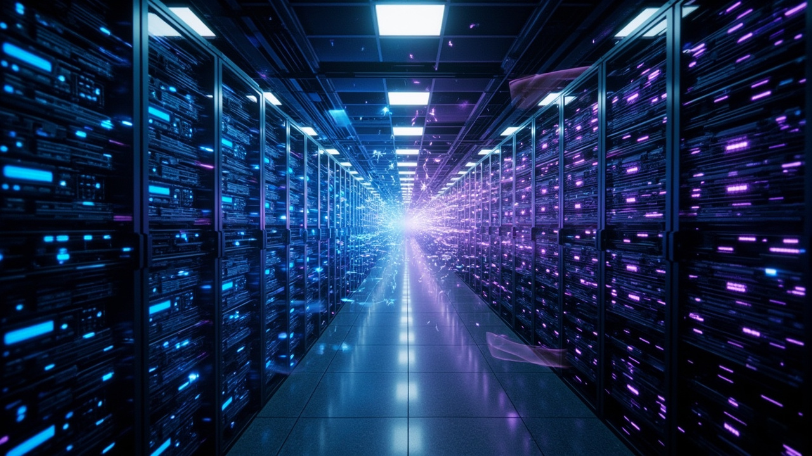

SemiAnalysis 四案例細數 Meta AI 基礎設施的系統性失敗

SemiAnalysis 以四個具體案例細數 Meta AI 在基礎設施方面踩過的坑——25 億美元芯片收購失敗、客製化伺服器設計錯誤、GB200 機櫃比競爭對手更差更貴，以及正在進行中的 AMD MI450 半血版決策失誤。誰在決定買什麼硬體、這些硬體是為誰的需求設計的，可能比誰在寫模型代碼更能決定一家公司能走多遠。
Meta 花費超過 25 億美元收購 RISC-V 芯片創業公司 Rivos，看中 SIMT 核心 IP 和繞過博通自行管理芯片製造的 COT 能力。但收購完成後 Olympus 項目直接取消，替代項目 Phoebe 流片時間排到 2028 年。Meta 把 Rivos 工程師當「人頭池」拆分給各團隊，約 30% 的 Rivos 工程師在裁員中被解僱，聯合創始人已離職。
Meta 自研 Grand Teton 比英偉達標準 HGX 多了一整個交換托架，目標是讓每台伺服器多塞 8 塊 SSD。但這個需求並非模型團隊提出，結果實際使用時遠低於預期。而且英偉達在 Hopper 這代已通過 ConnectX-7 網卡集成 PCIe 交換功能，額外交換托架變得多餘，最終 BOM 更貴、功耗更高、集成更複雜。
Meta 把標準 1:2（Grace CPU:B200 GPU）改成 1:1，動機是推薦系統需要更高 CPU:GPU 配比，代價是單機架只有 36 顆 GPU，需走 NVL36x2 雙機架方案，交換機數量翻倍，網絡多一跳延遲。SemiAnalysis 估算 TCO 比標準配置高出 14%。在生成式 AI 旗艦系統的關鍵窗口期，大模型團隊拿到的是比競爭對手更差、更貴的基礎設施，估算決策讓 Meta 付出數十億美元代價。
AMD 的 MI450 是市場上製程最先進的 GPU（2 奈米、混合鍵合、12 棧 HBM），Meta 卻堅持要半血版，把 AMD 產品的核心價值主張完全磨平。這個決定是在 TBD Lab（Meta 前沿模型實驗室）成立之前就拍板的，TBD Lab 面對計算能力和 HBM 頻寬都嚴重縮水的系統毫無興趣，SemiAnalysis 甚至公開喊話 AMD 繞過 Meta 基礎設施團隊直接跟 TBD Lab 談。
四個案例的共同模式：每個決策在某個團隊優化的某個狹窄指標上都說得通，但站在公司整體角度都是糟糕的選擇。SemiAnalysis 將病因歸結到組織文化——六個月績效評估 + 末位淘汰驅動短期主義，讓基礎設施這種重投資、長週期領域無法做長期戰略規劃。
「當基礎設施團隊開始替模型團隊定義需求的時候，可能就是整個組織需要停下來重新審視決策機制的時候了。」
— SemiAnalysisSemiAnalysis 認為 AI Infra 的目標從來不是交付最有技術辨識度的系統，而是在模型快速變化的前提下，持續交付最多的有效訓練進展和最低的單位推理成本。相比之下，國內阿里雲 HPN 網絡架構是正面對照——從大模型訓練負載實際特徵出發，與模型團隊緊密協作，選擇 RoCE 加白盒自研交換機路線，相關設計發表在 SIGCOMM 2024。
| 案例 | 決策動機 | 實際結果 | 代價 |
|---|---|---|---|
| Rivos 收購 | 獲得 SIMT IP + COT 能力 | Olympus 取消，工程師被當人頭池拆散 | 25 億美元 + 30% 收購工程師被裁 |
| Grand Teton | 更多本地直連存儲 | 模型團隊使用遠低於預期，設計取消 | BOM 更貴、功耗更高、集成更複雜 |
| Ariel GB200 | 推薦系統需要更高 CPU 配比 | NVL36x2 比標準 NVL72 TCO 高 14% | 數十億美元，多跳延遲，可靠性更差 |
| AMD MI450 半血版 | 拉高 CPU:GPU 計算配比 | TBD Lab 對縮水系統毫無興趣 | 可能直接倒向英偉達 Rubin，AMD 出貨量受創 |